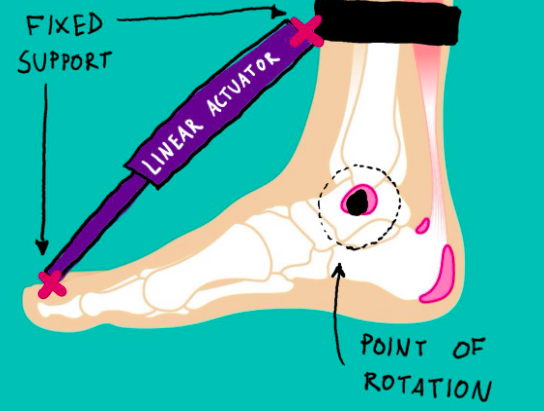
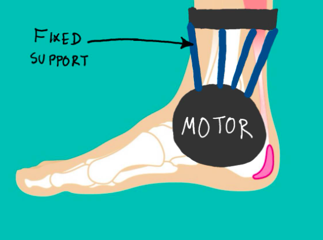
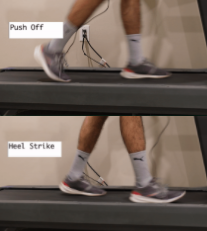
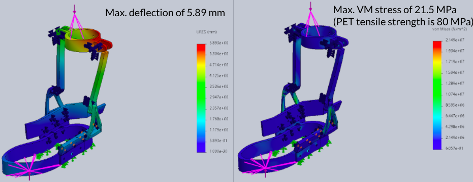
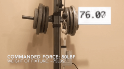

Minimalist Lower-Limb Exoskeleton
For my capstone project, me and my team are working on creating an exoskeleton with the purpose of applying rehabilitation for users who have suffered a stroke, or spinal cord injury. Using the principles of neural plasticity, the user will be supported about the ankle joint with the exoskeleton providing tuneable support in an attempt of regaining motor function. Note: this is still in progress and is subject to change. A lot.


Update: Jan 01 2021
After completing my first year of 4th year, a low-fidelity model of the exoskeleton was created. This Lo-Fi model is a low cost prototype that is used for validation and testing. With any project there are sure to be be "unknown unknowns" and through testing of the Lo-Fi model, some of these can be known. The current state of the project has two key features: 1) find position of user in gait cycle and 2) apply torque to ankle joint related to that position. Implementation of sensors used to capture this data is shown below.



Update: Apr 30 2021
The final project is now completed! This version of the exoskeleton actually features an on-foot design that is able to reduce torque by 45% and peak muscle engagement by 11% for users during testing. This project also won the following awards: Norman Esch Entreperneurship Award, Adel Sedra Entreperneurship Choice Award, John Medley Mechanical Engineering in Medicine Award, and the Canadian Posture and Seating Award. It was also a finalist for the Social Awareness Award, ASME Technical Quality Award, Apple Award for Mechanical and Industrial Design, and the Baylis Medical Award! Overall it was a really fun experience and I learned a lot about biomechanics.